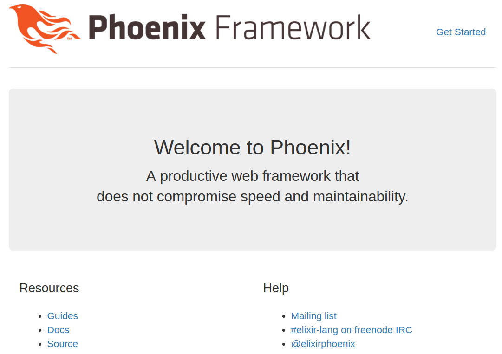

I’m documenting my experience installing Phoenix on Ubuntu 14.04 in the hopes that I can help others avoid some problems I ran into. I’ll be brief when the official documentation serves me well. When the documentation leaves me confused, I’ll explain what I did to resolve the issues.
Install dependencies
Install Elixir & Erlang
Follow the Elixir installation guide
Install Hex
$ mix local.hex
Install Node.js
Follow the Node.js download page. Note that
you need to install Node.js >= 5.0.0. This is specified in the
Phoenix installation guide, but I missed it in my first pass. I initially
installed Node.js using apt-get, but that provides version that’s incompatible
with Phoenix.
On Ubuntu, follow these instructions for Node.js v6:
$ curl -sL https://deb.nodesource.com/setup_6.x | sudo -E bash -
$ sudo apt-get install -y nodejs
Install PostgreSQL
$ sudo apt-get install postgresql
Install inotify-tools
$ sudo apt-get install inotify-tools
Install Phoenix
$ mix archive.install https://github.com/phoenixframework/archives/raw/master/phoenix_new.ez
Create a project
$ mix phoenix.new hello
$ cd hello
Create an Ecto repo
$ mix ecto.create
Since I’m new to PostreSQL - and to databases in general - this step gave me some trouble. I was greeted with this error:
** (Mix) The database for Hello.Repo couldn't be created: FATAL
(invalid_password): password authentication failed for user "postgres"
16:35:22.980 [error] GenServer #PID<0.147.0> terminating
** (Postgrex.Error) FATAL (invalid_password): password authentication failed for
user "postgres"
(db_connection) lib/db_connection/connection.ex:148:
DBConnection.Connection.connect/2
(connection) lib/connection.ex:623: Connection.enter_connect/5
(stdlib) proc_lib.erl:240: :proc_lib.init_p_do_apply/3
Last message: nil
State: Postgrex.Protocol
You may also need to alter your postgreSQL configuration to ensure it works
with Ecto. I had to alter the postgres user. You can do this using the `psql`
terminal:
If you get something similar, you may have to alter the postgres user password in your postgreSQL configuration1. Do this:
# Start the psql terminal
$ sudo -u postgres psql
psql (9.3.13)
Type "help" for help.
postgres=# ALTER USER postgres PASSWORD 'postgres';
postgres=# ALTER USER postgres WITH SUPERUSER;
Start the Phoenix application
$ mix phoenix.server
If everything went well, you should see the default Phoenix landing page when
you point your browser to localhost:4000:

-
More info here: http://www.phoenixframework.org/docs/ecto-models ↩